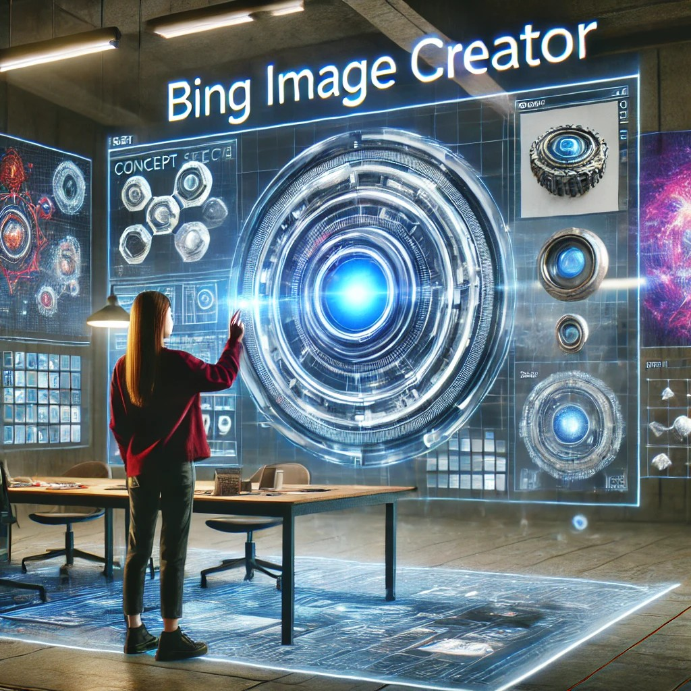

Objetivo:
Descubre cómo la IA puede ayudarte a generar imágenes a partir de descripciones textuales y colabora con tus compañeros para mejorar los resultados. Utiliza Bing Image Creator para diseñar imágenes futuristas, arte digital y representaciones visuales de tus ideas. Además, analiza cómo las descripciones textuales afectan las imágenes generadas por IA, y reflexiona sobre el proceso creativo y técnico.
Desafíos:
-
Genera Imágenes:
- Crea imágenes utilizando descripciones sencillas y complejas.
- Experimenta con diferentes descripciones para ver cómo la IA traduce tus ideas en imágenes visuales.
-
Guarda y Organiza:
- Guarda tus creaciones y organiza las imágenes para futuros proyectos.
-
Comparte y Colabora:
- Comparte tus imágenes con un compañero y discutan las diferencias. Reflexiona juntos sobre cómo el lenguaje influye en los resultados generados.
-
Reflexiona sobre el Proceso:
- Analiza cómo la IA interpreta las descripciones y cómo los matices del lenguaje pueden alterar los resultados visuales.

Meta:
Convertirte en un Artista Digital del Futuro y un Analista de IA, capaz de utilizar la inteligencia artificial no solo para crear imágenes sorprendentes, sino también para comprender cómo la tecnología interpreta el lenguaje humano para generar visualizaciones impactantes.